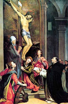
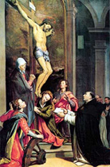

|  |
|---|
Textum Leoninum Romae 1888 editum
et automato translatum a Roberto Busa SJ in taenias magneticas
denuo recognovit Enrique Alarcón atque instruxit


|  |
|---|


[28231] Summa theologiae, pr. Quia Catholicae veritatis doctor non solum provectos debet instruere, sed ad eum pertinet etiam incipientes erudire, secundum illud apostoli I ad Corinth. III, tanquam parvulis in Christo, lac vobis potum dedi, non escam; propositum nostrae intentionis in hoc opere est, ea quae ad Christianam religionem pertinent, eo modo tradere, secundum quod congruit ad eruditionem incipientium. Consideravimus namque huius doctrinae novitios, in his quae a diversis conscripta sunt, plurimum impediri, partim quidem propter multiplicationem inutilium quaestionum, articulorum et argumentorum; partim etiam quia ea quae sunt necessaria talibus ad sciendum, non traduntur secundum ordinem disciplinae, sed secundum quod requirebat librorum expositio, vel secundum quod se praebebat occasio disputandi; partim quidem quia eorundem frequens repetitio et fastidium et confusionem generabat in animis auditorum. Haec igitur et alia huiusmodi evitare studentes, tentabimus, cum confidentia divini auxilii, ea quae ad sacram doctrinam pertinent, breviter ac dilucide prosequi, secundum quod materia patietur.